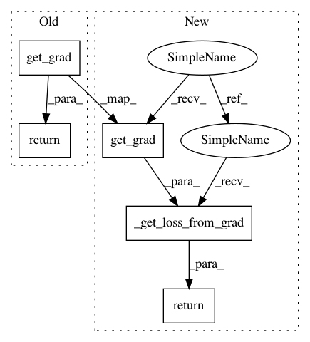

ee8819aa148805c3f9ea4b8e4568dada985cd28b,thinc/loss.py,CategoricalCrossentropy,__call__,#CategoricalCrossentropy#Any#Any#,38
Before Change
def __call__(
self, guesses: Floats2d, truths: Union[Ints1d, Floats2d]
) -> Tuple[Floats2d, float]:
return self.get_grad(guesses, truths), self.get_loss(guesses, truths)
def get_grad(self, guesses: Floats2d, truths: Union[Ints1d, Floats2d]) -> Floats2d:
if truths.ndim != guesses.ndim:
// transform categorical values to one-hot encoding
After Change
return truths, mask
def __call__(
self, guesses: Floats2d, truths: IntsOrFloatsOrStrs,
) -> Tuple[Floats2d, float]:
d_truth = self.get_grad(guesses, truths)
return (d_truth, self._get_loss_from_grad(d_truth))
def get_grad(self, guesses: Floats2d, truths: IntsOrFloatsOrStrs,) -> Floats2d:
target, mask = self.convert_truths(truths, guesses)
if guesses.shape != target.shape: // pragma: no cover
In pattern: SUPERPATTERN
Frequency: 3
Non-data size: 5
Instances
Project Name: explosion/thinc
Commit Name: ee8819aa148805c3f9ea4b8e4568dada985cd28b
Time: 2020-05-09
Author: honnibal+gh@gmail.com
File Name: thinc/loss.py
Class Name: CategoricalCrossentropy
Method Name: __call__
Project Name: explosion/thinc
Commit Name: 7d7dd54986ddc6218acf2db119b287f68111e15a
Time: 2020-05-14
Author: honnibal+gh@gmail.com
File Name: thinc/loss.py
Class Name: SequenceCategoricalCrossentropy
Method Name: __call__
Project Name: explosion/thinc
Commit Name: 7d7dd54986ddc6218acf2db119b287f68111e15a
Time: 2020-05-14
Author: honnibal+gh@gmail.com
File Name: thinc/loss.py
Class Name: SequenceCategoricalCrossentropy
Method Name: get_loss